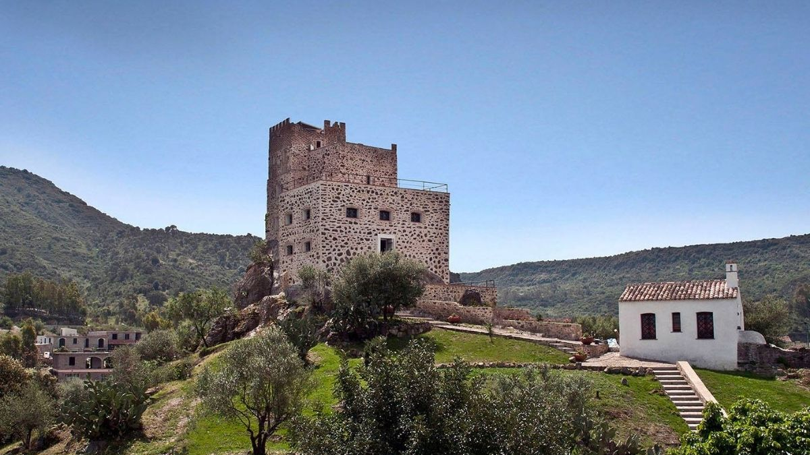

Why Galtellí?
Galtellí, the town of nature
and architecture
It is a medieval town in Baronìa,
in the central-eastern part of Sardinia,
built in stone, authentic, fascinating and
extraordinarily devout. Lapped by the Cedrino river,
Galtellì sits on a spectacular plateau at the foot
of Tuttavista, on whose summit stands
the majestic bronze statue of Christ,
a destination for pilgrimages along a path
that climbs the slopes of the mountain.
The sculpture is a reproduction of the 'miraculous'
wooden Christ kept in the church "Santissimo Crocifisso",
built in Gothic style in 1500.